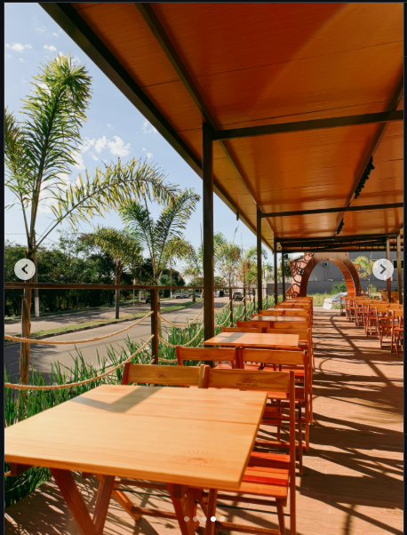

Sabores
para descobrir
Opções gastronômicas para diferentes vontades, em uma vila feita para compartilhar.
Uma vila gastronômica feita para reunir sabores, pessoas e bons momentos — com o céu aberto e o pôr do sol como parte da experiência.
O Sunset Village é um espaço gastronômico em Itu pensado para quem gosta de chegar, escolher o que comer e aproveitar o momento sem pressa.
Mesas ao ar livre, madeira, verde e aquela luz quente do fim de tarde criam o cenário para encontros que começam no almoço e podem continuar até o sol se despedir.
Uma experiência que junta diferentes opções em um só lugar. Você escolhe o sabor, chama quem gosta e deixa o resto por conta do momento.
Opções gastronômicas para diferentes vontades, em uma vila feita para compartilhar.
Espaço confortável para almoçar, conversar, reunir a família ou simplesmente aproveitar.
Quando a luz muda, a vila ganha outro clima. E é justamente aí que começa o melhor do sunset.

Madeira, verde, luz natural e mesas espalhadas pela varanda. Um espaço que convida a desacelerar e aproveitar a companhia.
É sobre ter um lugar gostoso para encontrar quem você gosta. Um café, um almoço, uma comida especial, uma conversa longa ou aquele fim de tarde que pede mais um pouco.
Acompanhar novidades no Instagram ↗Marcas e operações gastronômicas ocupam a vila e dão vida ao espaço. Para ver horários, novidades e o que está rolando hoje, acompanhe o Instagram.
Rua Carlos Zaim, s/n
Itu Novo Centro · Itu/SP
Horários, novidades, sabores e tudo o que está acontecendo na vila.
Seguir no Instagram ↗